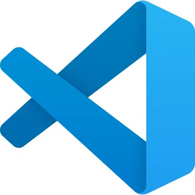

Как создать веб-сайт с нуля?
Веб-сайт (от англ. website: web — «паутина, сеть» и site — дословно — «место, сегмент, часть в сети») — одна или несколько логически связанных между собой веб-страниц, размещённых в интернете. Обычно сайт имеет уникальный адрес и воспринимается пользователями как единое целое.
Начало
Для начала нам нужно создать макет. Это можно сделать в различных программах таких как: Figma, Photoshop, Pixso, Paint и другие. Для создания макета этого сайта я использовал Pixso.
Знакомство с Pixso
Pixso — это облачный инструмент для совместной работы дизайнеров, который предлагает комплексное решение для всего процесса проектирования, от прототипирования до разработки.
Вот его основные черты:
• Веб-ориентированность: Это главное отличие. Pixso работает прямо в браузере, не требуя
установки
десктопных приложений. Это делает его доступным с любого устройства и упрощает совместную
работу.
• Все в одном: Объединяет в себе функционал векторного редактора, инструмента для
прототипирования и
платформы для передачи макетов разработчикам.
• Совместная работа в реальном времени: Несколько пользователей могут одновременно работать над
одним проектом, видеть изменения друг друга мгновенно.
• Интеллектуальные компоненты и стили: Позволяет создавать переиспользуемые элементы дизайна и
поддерживать единообразие.
• Прототипирование: Можно создавать интерактивные прототипы для демонстрации логики работы
интерфейса.
• Передача макетов разработчикам: Предоставляет инструменты для удобной передачи финальных
макетов,
спецификаций и доступа к ассетам.
• Доступная цена: Часто позиционируется как более доступная альтернатива другим популярным
инструментам.
Кому подходит?
Pixso отлично подойдет командам дизайнеров, которым важна скорость, простота доступа и
эффективная
совместная работа. Он также удобен для небольших команд и фрилансеров, которые ценят облачные
решения.
Проще говоря, Pixso — это современный, облачный и удобный инструмент для всей команды,
работающей
над дизайном продуктов.
Знакомство с программой VScode

Следующим шагом нам нужно выбрать программу для дальнейшего написания кода. Лично мой выбор пал на программу Visual Studio Code. Эта программа является бесплатной, а самое главное универсальной, тоесть в ней, при надобности можно писать код на любом языке программирования.
Visual Studio Code (VS Code) — это один из самых популярных и мощных бесплатных редакторов кода, разработанный Microsoft. Он используется веб-разработчиками, программистами, верстальщиками и многими другими специалистами для написания и редактирования кода.
Вот его основные преимущества и возможности:
1. Бесплатность и кроссплатформенность
• VS Code абсолютно бесплатен.
• Работает на Windows, macOS и Linux.
2. Интеллектуальный редактор кода
• Подсветка синтаксиса: Автоматически выделяет разными цветами ключевые слова, переменные,
строки и комментарии для разных языков программирования (HTML, CSS, JavaScript, Python, PHP,
C++ и др.), что делает код намного читабельнее.
• Автодополнение (IntelliSense): Предлагает варианты кода по мере ввода, показывая возможные
функции, переменные и их параметры. Это значительно ускоряет написание кода и снижает
количество ошибок.
• Проверка ошибок: Подчеркивает синтаксические ошибки прямо во время написания кода.
3. Встроенный терминал
• Не нужно переключаться между редактором и командной строкой. В VS Code есть встроенный
терминал, где можно запускать команды, компилировать код, работать с Git и т.д.
4. Интеграция с Git
• VS Code имеет мощную встроенную поддержку системы контроля версий Git. Вы можете легко
видеть изменения в файлах, коммитить, пушить, пуллить и работать с ветками прямо из
редактора.
5. Огромное количество расширений
• Это, пожалуй, главное преимущество VS Code. Для него существует тысячи бесплатных
расширений (плагинов), которые добавляют новую функциональность:
• Поддержка новых языков: Rust, Go, Swift и др.
• Препроцессоры CSS: SASS, LESS.
• Фреймворки: React, Vue, Angular, Docker, Python.
• Инструменты для работы: Prettier (автоформатирование кода), ESLint (проверка кода на
ошибки), Live Server (автоматическое обновление страницы при изменении кода).
• Темы оформления: Позволяют изменить внешний вид редактора (цвета, шрифты), чтобы работать
было комфортнее.
6. Гибкая настройка
• Почти все аспекты работы VS Code можно настроить под себя: горячие клавиши, внешний вид,
поведение редактора.